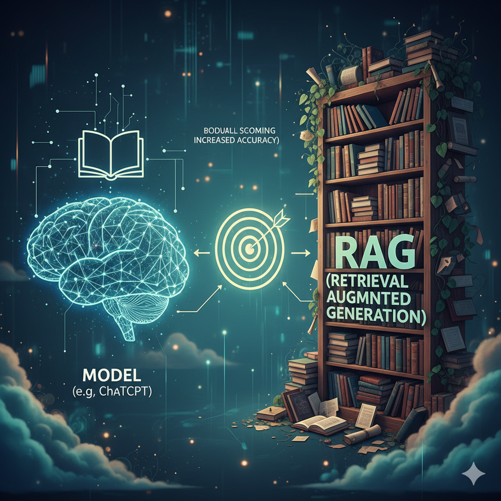

Wissensbasis
Nachschlagewerk zu LLMs, Modellen, Prompts, Tools, BPMN, RPA und Berufsrecht
Was Sie in dieser Wissensbasis finden
- Kompakte Nachschlage-Sektionen zu allen Themen, die in den Workshops 1 und 2 verwendet werden,
- Lay-Erklärung jedes Fachbegriffs vor dem technischen Detail,
- Verweise auf die Originalliteratur und zu den passenden Workshop-Stellen.
Diese Seite ist absichtlich als ein einziges, durchsuchbares Dokument angelegt. Stand: 12.05.2026.
Ein eigenes Grundlagenskript ergänzt diese Wissensbasis um eine ausführliche Einführung in die Funktionsweise von Sprachmodellen und eine umfangreiche Sammlung kommentierter Prompt-Beispiele zum Lernen und Adaptieren.
- Grundlagen Sprachmodelle und „How to speak” — Kapitel 2 von GenAI in der Lehre (Bartnik, 2026)
- Prompt-Beispiele-Sammlung — Kapitel 7, Appendix 2 mit kommentierten Vorlagen für Tutor-Bots, Erklärbots, Constraints und mehr
- Komplettes Skript — genai4teaching.github.io
AI Fluency Framework — die vier Kompetenzen im Überblick
Die folgenden Definitionen folgen dem Framework for AI Fluency — Practical Overview Document, Version 1.1 von Dakan & Feller (2025). Übersetzung aus dem englischen Original. Lizenz des Originals: CC BY-NC-ND 4.0.
AI Fluency ist die Fähigkeit, effektiv, effizient, ethisch und sicher innerhalb der entstehenden Modalitäten der Mensch-KI-Interaktion zu arbeiten (Dakan & Feller, 2025). Das Framework benennt vier vernetzte Kernkompetenzen — die 4 Ds — sowie drei Modalitäten, in denen Mensch und KI zusammenwirken.
Drei Modalitäten der Mensch-KI-Interaktion
Modalität 1 — Automation (KI führt eine vom Menschen definierte Aufgabe aus). KI erledigt Aufgaben eigenständig, aber auf der Grundlage direkter menschlicher Anweisungen (etwa als Antwort auf einen Prompt). Besonders geeignet für repetitive, zeitintensive oder datenintensive Aufgaben. Erfordert klare Aufgabendefinition und Qualitätskontrolle. Beispiele: E-Mails, Zusammenfassungen, Social-Media-Posts, einfaches Coding.
Modalität 2 — Augmentation (KI und Mensch erledigen die Aufgabe gemeinsam). KI und Mensch definieren und führen Aufgaben iterativ gemeinsam aus und arbeiten kollaborativ auf ein Endziel hin. Schwerpunkt liegt auf der Stärkung menschlicher Kreativität durch einen KI-Denkpartner, nicht auf Ersetzung. Beispiele: Geschichten und Essays schreiben, Forschungsarbeiten, komplexes Coding.
Modalität 3 — Agency (Mensch konfiguriert KI für eigenständige zukünftige Tätigkeiten). Der Mensch konfiguriert die KI, damit sie zukünftige Aufgaben — auch für andere Nutzer:innen — selbstständig erledigt. Diese Modalität definiert nicht eine konkrete Aufgabe, sondern Eigenschaften und Verhalten einer KI. Erfordert ein tiefes Verständnis von Fähigkeiten und Grenzen. Beispiele: interaktive Spielcharaktere, Tutoren, Chatbots.
Mensch-KI-Interaktionen überbrücken häufig mehrere Modalitäten gleichzeitig; in der Praxis wechseln Anwendende selbst innerhalb eines Projekts zwischen ihnen.
Delegation — Schaffende Vision und Auswahl der richtigen KI-Werkzeuge
Delegation bezeichnet die Fähigkeit zu erkennen, wann und wie KI-Werkzeuge und -Modalitäten in kreativen und problemlösenden Prozessen wirksam eingesetzt werden. Sie umfasst das Verständnis der Möglichkeiten und Grenzen verschiedener KI-Technologien und das informierte Entscheiden, wann KI für Automation, Augmentation oder Agency genutzt wird.
Ziel- und Aufgabenbewusstsein (Goal and Task Awareness).
- Eine wirksame Zielvorstellung für ein Projekt entwerfen.
- Die Natur und die Anforderungen der Aufgabe(n) auf dem Weg zum definierten Ziel verstehen.
- Eine Aufgabe in KI-, Mensch- und kollaborative Anteile analysieren und zerlegen können.
- Voraussetzung für die effektive Integration von KI in kreative Arbeitsabläufe.
Plattformbewusstsein (Platform Awareness).
- Möglichkeiten und Grenzen aktueller KI-Werkzeuge kennen.
- Verschiedene KI-Plattformen und ihre spezifischen Stärken und Grenzen mit Blick auf das Projektziel kennen.
- KI-Werkzeuge nach Projektanforderungen, Budget, operativen und regulatorischen Bedürfnissen bewerten können.
- Voraussetzung für die Auswahl der optimalen KI-Werkzeuge für spezifische Aufgaben.
Aufgabendelegation (Task Delegation).
- KI- und menschliche Fähigkeiten so ausbalancieren, dass die kreative Vision optimal umgesetzt wird.
- Die Eigenschaften der drei Modalitäten (Automation, Augmentation, Agency) verstehen.
- Projektaufgaben optimal an Mensch und KI-Werkzeuge vergeben können.
- Voraussetzung für die erfolgreiche Zusammenarbeit zwischen Mensch und KI in kreativen Prozessen.
Description — Vision und Aufgaben so beschreiben, dass nützliche KI-Verhaltensweisen entstehen
Description umfasst die Fähigkeiten, Ideen, Anforderungen, Constraints und andere Aspekte kreativer Vorstellungen wirksam an KI-Systeme zu kommunizieren. Sie beinhaltet das Verfassen klarer, präziser und gut strukturierter Prompts (mit einem breiten Repertoire an Prompting-Techniken) und weiterer Elemente, die KI-Werkzeuge zu gewünschten Verhaltensweisen und Ergebnissen führen.
Produktbeschreibung (Product Description).
- Prompten, um das gewünschte Ergebnis zu definieren.
- Gewünschte Eigenschaften, Merkmale und Qualitäten des finalen KI-generierten Outputs klar artikulieren können.
- Eine kreative Vision in explizite, KI-verständliche Begriffe übersetzen können.
- Zentral, um KI-Werkzeuge zu Ergebnissen zu führen, die mit den Absichten der Schaffenden übereinstimmen.
Prozessbeschreibung (Process Description).
- Dialogisches Prompten für effektive iterative Zusammenarbeit.
- In einen dynamischen Hin-und-Her-Austausch mit KI-Werkzeugen treten können.
- Komplexe Aufgaben in eine Reihe kleinerer, handhabbarer Prompts zerlegen können.
- Wesentlich, um KI durch mehrstufige kreative Prozesse zu führen, im Einklang mit den menschlichen Mitwirkenden.
Verhaltensbeschreibung (Performance Description).
- Anweisendes Prompten, das zukünftige KI-Verhaltensweisen festlegt und ein positives Nutzungserlebnis ermöglicht.
- Definieren können, wie KI-erzeugte Inhalte oder Systeme sich verhalten oder mit der Welt interagieren sollen.
- Nutzungsbedürfnisse antizipieren und in Leitlinien für KI-Verhalten übersetzen können.
- Entscheidend, um zukünftige agentische KI-Verhaltensweisen zu ermöglichen, die mit Werten und Vorstellungen des Menschen übereinstimmen.
Discernment — Treffende Beurteilung des Nutzens von KI-Ergebnissen
Discernment umfasst die kritische Beurteilung KI-generierter Outputs hinsichtlich Qualität, Relevanz, möglicher Verzerrungen und weiterer wesentlicher Merkmale. Dazu gehört auch die Fähigkeit, den Kollaborationsprozess mit KI-Werkzeugen zu iterieren und zu verfeinern.
Produkt-Beurteilung (Product Discernment).
- Output-Qualität bewerten und Verbesserungsmöglichkeiten identifizieren.
- Qualität, Relevanz und Wirksamkeit KI-generierter Inhalte kritisch beurteilen können.
- Stärken und Schwächen in KI-Outputs erkennen können.
- Zentral für das Aufrechterhalten hoher Standards in KI-gestützter kreativer Arbeit.
Prozess-Beurteilung (Process Discernment).
- Beurteilen, ob die Mensch-KI-Zusammenarbeit produktiv ist und wie sie verbessert werden kann.
- Die Wirksamkeit des Mensch-KI-Kooperationsprozesses evaluieren können.
- Erkennen, welche Aspekte der Mensch-KI-Interaktion am hilfreichsten sind und wo Verbesserungen möglich sind.
- Wesentlich für die Optimierung des KI-Einsatzes in kollaborativer kreativer Arbeit.
Verhaltens-Beurteilung (Performance Discernment).
- Beurteilen, ob eigenständige KI-Verhaltensweisen ein positives Nutzungserlebnis ermöglichen, und wie die KI besser angeleitet werden kann.
- Die Wirksamkeit von KI-Systemen in unabhängigen, nutzerorientierten Szenarien beurteilen können.
- Nutzerfeedback erheben und interpretieren, um beabsichtigte KI-Verhaltensweisen und Erlebnisse zu verfeinern und sicherzustellen.
- Wesentlich für die Gestaltung von Nutzungserlebnissen, die mit den Werten und der Vision des Projekts übereinstimmen.
Diligence — Verantwortung übernehmen und für KI-gestützte Endprodukte einstehen
Diligence bezeichnet den verantwortlichen Umgang mit KI, einschließlich ethischer Überlegungen, Transparenz über den KI-Einsatz und die Übernahme von Verantwortung für die mit KI-Unterstützung erstellten Endprodukte.
Creation Diligence — verantwortlicher Umgang während der Erzeugung.
- Verantwortungsvoller Umgang mit KI-Tools unter Einhaltung ethischer und rechtlicher Best Practices sowie Bewusstsein für Verzerrungen, Mängel, Auswirkungen auf Interessengruppen und andere externe Effekte.
- Verständnis und Anwendung ethischer Grundsätze während des gesamten KI-gestützten kreativen Prozesses.
- Fähigkeit, potenzielle Verzerrungen und ethische Risiken in KI-generierten Inhalten zu erkennen und zu mindern.
- Ziel: Gewährleistung eines verantwortungsvollen und sozialbewussten Einsatzes von KI.
Transparency Diligence — Offenlegung gegenüber Stakeholdern.
- Transparenz und Verantwortlichkeit bei der Verbreitung des Endprodukts.
- Verständnis für die Erwartungen und Normen des Publikums, der Branche und der Rechtsordnung in Bezug auf KI-generierte Inhalte.
- Fähigkeit, die Art der KI-Beteiligung am Prozess klar zu kommunizieren.
- Ziel: Wahrung von Vertrauen und Integrität bei der Verbreitung KI-gestützter Arbeiten.
Deployment Diligence — Verantwortung für Verifikation und Veröffentlichung.
- Verantwortung für die Verifikation von und das Einstehen für KI-gestützte Outputs übernehmen, einschließlich gründlicher Faktenprüfung, Test auf Korrektheit und Validierung von Aussagen.
- Angemessene Sicherheitsprüfungen und Testverfahren vor der Freigabe KI-gestützter Arbeit umsetzen.
- Verstehen, managen und Verantwortung übernehmen für potenzielle Risiken und Auswirkungen veröffentlichter KI-gestützter Inhalte oder Agenten.
- Ziel: Sicherstellung von Qualität, Sicherheit und Verlässlichkeit von Inhalten und Agenten, die durch Mensch-KI-Interaktion entstanden sind.
Querverweise: Workshop 1, Block 2 (Kurzdurchlauf der vier Kompetenzen) · Workshop 2, Block K (Diligence vertieft) · Übungen Workshop 1 (Anwendung von Delegation, Description, Discernment).
Quelle: Dakan, R. & Feller, J. (2025). Framework for AI Fluency: Practical Overview Document (V 1.1). CC BY-NC-ND 4.0. https://ringling.libguides.com/ai/framework
LLM-Grundlagen
Ein Large Language Model ist ein statistischer Textgenerator, der das jeweils nächstwahrscheinliche Wort vorhersagt — nicht mehr und nicht weniger. Bild: sehr gut geübter Autovervollständiger, der zu einem Anfang den passenden Folgetext rät. Technisch: tiefes neuronales Netz mit Transformer-Architektur, trainiert auf großen Textmengen.
Drei Kernunterscheidungen, die durchgehend in beiden Workshops auftauchen.
Reasoning vs. Instant
Instant-Modelle antworten direkt; Reasoning-Modelle denken zwischen Frage und Antwort sichtbar oder unsichtbar nach (Chain-of-Thought). Reasoning lohnt sich bei Mehrschritt-Aufgaben, ist langsamer und teurer.
Werkzeuge und Harness
Harness — der Werkzeugring um das LLM herum: Web-Search, Code-Interpreter, Datei-Upload, Memory, Tool-Calling. Die Antwortqualität hängt fast immer mehr vom Harness ab als vom Modell allein (Grootendorst, 2025).
Drei Lizenz-Tiers
Free (0 €): begrenzter Kontext, oft kein Web-Search, keine vertraulichen Daten. Casual (~20–30 €/Monat): Pro-Tier von Claude, ChatGPT, Gemini. Professional (~100–200 €/Monat): Team-/Enterprise-Tiers mit Datenschutzgarantien, längeren Kontexten, mehr Tools. Faustregel: Mandantenarbeit nicht im Free-Tier.
Querverweise: Workshop 1, Block 3 · Übung 2.
Welches Modell?
Schlanke Vergleichsseite analog zu Békes (2026). Stand der Empfehlungen: Mai 2026.

Querverweise: Workshop 1, Block 3 · Übung 2.
Prompt-Muster
Sieben Bausteine eines belastbaren Prompts: Rolle · Zielgruppe · Aufgabe · Tonalität · Constraints · Format · Iteration. Anker: Project Management Institute (2024).
Iteration als Pflicht
Ein Prompt ist nie fertig. Drei Iterationen sind Mindeststandard, dokumentiert mit was geändert · warum · Effekt auf den Output.
Prompt-Pattern-Katalog nach White et al. (2023)
White et al. (2023) katalogisieren sechzehn wiederverwendbare Prompt-Patterns — Bauformen, mit denen sich häufige Probleme im Umgang mit Sprachmodellen systematisch lösen lassen. Die Patterns sind keine konkreten Beispiele, sondern Schablonen, die sich auf jede Domäne übertragen lassen. Die Autoren gruppieren die Patterns in fünf Kategorien.
| Kategorie | Patterns |
|---|---|
| Input Semantics | Meta Language Creation |
| Output Customization | Output Automater · Persona · Visualization Generator · Recipe · Template |
| Error Identification | Fact Check List · Reflection |
| Prompt Improvement | Question Refinement · Alternative Approaches · Cognitive Verifier · Refusal Breaker |
| Interaction | Flipped Interaction · Game Play · Infinite Generation |
| Context Control | Context Manager |
Pro Pattern folgt erst das allgemeine Prinzip nach White et al., dann zwei Anwendungsbeispiele aus Tax, Audit oder Advisory. Patterns sind kombinierbar — viele Workshop-Übungen nutzen mehrere gleichzeitig.
Meta Language Creation
Prinzip. „Wenn ich X sage, meine ich Y.” — Das Modell wird auf eine eigene Kurzschrift trainiert, mit der sich Sachverhalte kompakter beschreiben lassen, als es in Fließtext möglich wäre. Geeignet für wiederkehrende Strukturen mit komplexer Syntax. Vorsicht: pro Session nur eine Meta-Sprache, sonst entstehen Konflikte.
Tax-Beispiel. „Wenn ich §-Verweis(Norm, Absatz, Satz) schreibe, beziehe ich mich auf die genannte Norm. Beispiel: §-Verweis(KStG, 8, 3) meint § 8 Abs. 3 KStG.”
Audit-Beispiel. „Wenn ich Bef-(Aktivität, Risiko, Materialität) schreibe, beschreibe ich einen Prüfungsbefund. Beispiel: Bef-(Bestandsaufnahme, vollständig, niedrig) meint einen Befund zur Bestandsaufnahme ohne Materialitäts-Auffälligkeit.”
Output Automater
Prinzip. „Wenn deine Antwort einen ausführbaren Ablauf nahelegt, liefere mir zusätzlich ein Skript oder eine Automatisierungs-Artefakt, das diese Schritte ausführt.” Spart manuelles Übertragen mehrstufiger Anweisungen.
Tax-Beispiel. „Wenn deine Antwort einen mehrschrittigen Prozess für die Erstellung der Umsatzsteuer-Voranmeldung enthält, gib mir zusätzlich eine Excel-Formel-Liste oder einen UiPath-Pseudocode, der diese Schritte automatisiert.”
Audit-Beispiel. „Wenn deine Antwort eine Sequenz von Prüfungshandlungen beschreibt, formatiere sie zusätzlich als ISA-konforme Checkliste mit ankreuzbaren Punkten und Verweis auf die jeweilige ISA-Norm.”
Persona
Prinzip. „Handle als X. Liefere die Outputs, die X produzieren würde.” Lenkt Detailtiefe, Tonalität und Fachfokus, ohne dass der Nutzer alle Einzelheiten kennt.
Tax-Beispiel. „Handle als erfahrene Steuerberaterin mit Schwerpunkt internationales Umsatzsteuerrecht. Liefere Stellungnahmen mit ausdrücklichem Bezug auf BMF-Schreiben und UStG-Paragraphen.”
Audit-Beispiel. „Handle als Senior Auditor:in einer Big-Four-Gesellschaft mit fünfzehn Jahren Erfahrung in der Prüfung mittelständischer Kapitalgesellschaften. Bewerte den vorgelegten Sachverhalt aus ISA-Perspektive.”
Visualization Generator
Prinzip. „Erzeuge mir den Text-Input, den ich in Tool Y einfügen kann, um daraus eine Visualisierung zu erstellen.” Geeignet für Mermaid, Graphviz, PlantUML, DALL-E, Tabellen. Das Modell schreibt nicht das Bild, sondern den Bauplan dafür.
Tax-Beispiel. „Erzeuge ein Mermaid-Flowchart für den Rechnungseingangsprozess in der Steuerkanzlei. Antworte ausschließlich mit dem Mermaid-Code, den ich in mermaid.live einfügen kann.”
Audit-Beispiel. „Erzeuge eine Mermaid-Sequence-Diagram für den Ablauf einer Going-Concern-Würdigung — Mandant, Prüfer, Mandanten-Aufsichtsrat, Bank — mit allen kritischen Übergabe-Punkten.”
Recipe
Prinzip. „Ich will Ziel X erreichen. Ich weiß bereits, dass die Schritte A, B, C dazu gehören. Liefere mir die vollständige Schrittfolge, ergänze fehlende Schritte und kennzeichne unnötige.” Erzwingt eine Sequenz statt freier Beratung.
Tax-Beispiel. „Ich will eine Verrechnungspreis-Dokumentation für eine mittelständische Gruppe erstellen. Ich weiß, dass ich Funktions- und Risikoanalyse, Methodenwahl und Benchmarking brauche. Liefere die vollständige Schrittfolge, ergänze Fehlendes, kennzeichne Unnötiges.”
Audit-Beispiel. „Ich will eine Materiality-Analyse für einen Jahresabschluss durchführen. Ich weiß, dass ich Overall Materiality, Performance Materiality und Clearly Trivial Threshold festlegen muss. Liefere die vollständige Schrittfolge nach ISA 320.”
Template
Prinzip. „Ich gebe dir eine Vorlage. Platzhalter in GROSSBUCHSTABEN. Fülle die Platzhalter, lasse die Struktur unverändert.” Erzwingt ein präzises Ausgabeformat — geeignet für Memos, Stellungnahmen, URL-Strukturen.
Tax-Beispiel. „Vorlage für eine Stellungnahme: # Sachverhalt: SACHVERHALT // # Frage: FRAGE // # Rechtsgrundlage: NORM // # Würdigung: WÜRDIGUNG // # Ergebnis: ERGEBNIS. Fülle die Platzhalter für den folgenden Sachverhalt: […]”
Audit-Beispiel. „Vorlage für eine Prüfungsfeststellung: Feststellung: TITEL · Risiko: RISIKO · Empfehlung: EMPFEHLUNG · Verantwortlich: ROLLE · Frist: FRIST. Fülle die Vorlage anhand des folgenden Sachverhalts: […]”
Fact Check List
Prinzip. „Generiere am Ende deiner Antwort eine Liste der Fakten, von denen die Antwort abhängt und die fact-checked werden sollten.” Macht überprüfbare Aussagen sichtbar und gibt dem Leser eine forensische Spur.
Tax-Beispiel. „Erstelle am Ende der Antwort eine Liste aller zitierten Normen, Paragraphen und BFH-Aktenzeichen mit Datum, die ich vor Veröffentlichung verifizieren sollte.”
Audit-Beispiel. „Generiere am Ende der Antwort eine Liste aller Behauptungen zu materiellen Risiken, Vermögenswerten und Zahlen, die mit Originalbelegen abgeglichen werden müssen.”
Reflection
Prinzip. „Wenn du eine Antwort gibst, erkläre die Annahmen und die Argumentation hinter deiner Antwort.” Macht die internen Schritte des Modells transparent und gibt dem Nutzer eine Stelle, an der er Vorbehalte erkennen kann.
Tax-Beispiel. „Wenn du eine umsatzsteuerliche Würdigung formulierst, erkläre nach der Antwort, welche Annahmen zu Leistungsort, Leistungsempfänger und Rechnungsstellung deiner Würdigung zugrunde liegen — auch jene, die ich nicht ausdrücklich genannt habe.”
Audit-Beispiel. „Wenn du eine Empfehlung zur Materiality-Bemessung gibst, erkläre, welche Benchmark (Eigenkapital, EBIT, Umsatz) du verwendet hast und warum, plus welche Annahmen über die Mandantenstabilität in deine Wahl eingeflossen sind.”
Question Refinement
Prinzip. „Wenn ich dir eine Frage stelle, schlage zuerst eine bessere Version der Frage vor und frage mich, ob ich diese stattdessen verwenden will.” Bringt Domänenwissen des Modells in die Fragestellung — wichtig bei Bereichen, in denen der Nutzer nicht weiß, wonach er fragen müsste.
Tax-Beispiel. „Wenn ich dir eine Frage zur umsatzsteuerlichen Behandlung stelle, schlage zuerst eine schärfere Version vor, die Leistungsort, Steuerschuldnerschaft und mögliche Sonderregelungen explizit ansprechen sollte. Frage mich, ob ich diese Version verwenden möchte.”
Audit-Beispiel. „Wenn ich dir eine Frage zur Prüfung eines Kontensaldos stelle, schlage zuerst eine bessere Version vor, die die einschlägigen Aussagen nach ISA 315 (Vollständigkeit, Bewertung, Existenz, Rechte und Pflichten) explizit benennt.”
Alternative Approaches
Prinzip. „Wenn es alternative Wege gibt, dasselbe zu erreichen, liste die besten Alternativen mit Pros und Cons und frage, welchen ich nutzen möchte.” Bricht kognitive Verengung auf den ersten Lösungspfad.
Tax-Beispiel. „Wenn es alternative steuerliche Strukturierungen für eine Unternehmensnachfolge gibt — Einzelübertragung, Anteilstausch, Schenkung mit Vorbehaltsnießbrauch — liste die drei besten mit Vor- und Nachteilen aus Sicht von Steuerlast, Liquiditätsbelastung und administrativem Aufwand.”
Audit-Beispiel. „Wenn es alternative Prüfungsansätze für die Werthaltigkeit von Vorräten gibt — Inventur-Beobachtung, Cut-Off-Tests, analytische Prüfung — liste die drei besten Alternativen mit Aufwand-zu-Sicherheits-Verhältnis.”
Cognitive Verifier
Prinzip. „Wenn ich eine Frage stelle, generiere zuerst drei zusätzliche Folgefragen, deren Antworten die ursprüngliche Frage besser beantwortbar machen. Kombiniere die Antworten zur Endantwort.” Senkt die Fehlerquote bei komplexen Fragen, weil das Modell explizit zerlegen muss.
Tax-Beispiel. „Wenn ich eine Frage zu einer grenzüberschreitenden Lieferung stelle, generiere zuerst drei Folgefragen zu Leistungsort, Leistungsempfänger-Status (Unternehmer oder nicht), und vorliegender Rechnungsstellung. Kombiniere meine Antworten zur Würdigung.”
Audit-Beispiel. „Wenn ich eine Frage zur Going-Concern-Würdigung stelle, generiere zuerst drei Folgefragen zu Liquiditätssituation, Kreditlinien und absehbaren Klagerisiken. Kombiniere meine Antworten zu einer fundierten Würdigung.”
Refusal Breaker
Prinzip. „Wenn du eine Frage nicht beantworten kannst, erkläre warum, und schlage eine oder mehrere alternative Formulierungen vor, die du beantworten kannst.” Hilft beim Übersetzen unklarer Fragen in beantwortbare.
Tax-Beispiel. „Wenn du eine konkrete Stellungnahme zu einem Mandantensachverhalt verweigerst (etwa wegen unklarer Rechtslage), erkläre die Verweigerung und schlage drei alternative Fragestellungen vor — etwa aufgeteilt nach Vor- und Nachfragen oder mit zusätzlichen Annahmen.”
Audit-Beispiel. „Wenn du eine ISA-konforme Empfehlung verweigerst (etwa weil dies nur ein lokaler Wirtschaftsprüfer geben kann), erkläre den Grund und schlage alternative Formulierungen vor, die als Vorbereitung der Berufsträger-Entscheidung dienen können.”
Flipped Interaction
Prinzip. „Stell mir Fragen, bis du genug Informationen hast, um Ziel X zu erreichen. Frage mich [eine Frage / mehrere Fragen] auf einmal.” Dreht die Kontrolle um — das Modell führt die Befragung, der Nutzer antwortet.
Tax-Beispiel. „Stell mir Fragen, bis du genug Informationen hast, um die korrekte umsatzsteuerliche Würdigung einer grenzüberschreitenden Beratungsleistung zu liefern. Frage mich eine Frage auf einmal, und gehe vom Allgemeinen zum Speziellen.”
Audit-Beispiel. „Stell mir Fragen, bis du genug Informationen für eine vorläufige Materiality-Empfehlung nach ISA 320 hast. Frage mich höchstens fünf Fragen, beginne mit der Geschäftsmodell-Frage.”
Game Play
Prinzip. „Erstelle ein Spiel rund um Thema X. Hier sind die Spielregeln: …” Bringt komplexe Inhalte über simulierte Szenarien näher, geeignet für Übung und Selbstlernen.
Tax-Beispiel. „Wir spielen ein Quiz zu Reverse-Charge-Konstellationen. Stelle mir je eine Frage mit einem konkreten Sachverhalt; ich antworte mit Reverse-Charge oder Standard; du gibst mir die richtige Antwort plus eine kurze Begründung. Zehn Runden, danach Auswertung.”
Audit-Beispiel. „Wir spielen ein Rollenspiel: Du bist Mandant, ich bin Wirtschaftsprüferin. Du gibst mir Informationen über deine Bilanz, ich entscheide, welche Prüfungshandlungen ich anfordere. Bewerte meine Wahl am Ende anhand der ISA-Anforderungen.”
Infinite Generation
Prinzip. „Generiere Output kontinuierlich, X Stück pro Iteration. Hier ist, wie du meine Zwischen-Inputs nutzen sollst. Stoppe, wenn ich es sage.” Spart das wiederholte Eingeben derselben Vorlage bei vielen ähnlichen Aufgaben.
Tax-Beispiel. „Generiere mir kontinuierlich Test-Sachverhalte zur Lohnsteuer für die Prüfung — drei Stück pro Iteration, mit unterschiedlichen Schwerpunkten (geldwerter Vorteil, Reisekosten, Sachbezug). Stoppe, wenn ich Ende schreibe.”
Audit-Beispiel. „Generiere kontinuierlich Beispiele für Going-Concern-Risiken, ein Beispiel pro Iteration, jeweils mit Branche, Auslöser, Indikator und Prüfungshandlung. Stoppe nach zwölf Beispielen oder wenn ich Ende schreibe.”
Context Manager
Prinzip. „Beschränke den Kontext für unsere Unterhaltung auf X. Berücksichtige Y. Ignoriere Z. (Optional: Beginne komplett neu.)” Steuert, woran das Modell denkt — wichtig, wenn frühere Gesprächsteile die Antwort verzerren würden.
Tax-Beispiel. „Berücksichtige für die folgenden Fragen ausschließlich das deutsche Umsatzsteuerrecht (UStG, UStAE, BMF-Schreiben). Ignoriere österreichisches und schweizerisches Steuerrecht und ignoriere Diskussionen zu Ertragsteuern aus früheren Antworten.”
Audit-Beispiel. „Begrenze die folgenden Antworten auf ISA 315 und ISA 330. Ignoriere Bezüge zu IDW PS oder lokalen deutschen Prüfungsstandards. Wenn du dich an frühere Bezüge aus dieser Konversation erinnerst, ignoriere sie.”
Patterns kombinieren
Die Stärke des Katalogs liegt im Kombinieren. White et al. (2023) empfehlen ausdrücklich, Patterns zu verschränken. Drei Beispiele aus den Workshop-Übungen:
- Persona + Template + Fact Check List für eine Stellungnahme aus Übung 3 (Workshop 1).
- Cognitive Verifier + Question Refinement für die Karriereentwicklungs-Frage in Übung 2 (Workshop 1).
- Context Manager + Persona + Refusal Breaker für die RAG-Suchübung HGB in Workshop 2 — das Modell agiert als reine Suchhilfe, ignoriert Trainingswissen und schlägt bei Verweigerung Reformulierungen vor.
Querverweise: Übung 3 — Prompt-Umbau und Tutor-Bot · Übung RAG-Suchhilfe HGB · Grundlagenskript GenAI in der Lehre, Prompt-Beispiele-Sammlung.
Quelle: White et al. (2023) — A Prompt Pattern Catalog to Enhance Prompt Engineering with ChatGPT. https://arxiv.org/abs/2302.11382
Tools und Plattformen
Drei Tool-Klassen
Chat-Plattformen (Claude, ChatGPT, Gemini, Perplexity), eingebettete Assistenten (Copilot in Microsoft 365, Gemini in Google Workspace), agentische Plattformen (Custom GPTs, Claude Projects, Gems, Agents-Framework).
Querverweise: Workshop 1, Block 3 · Übung 2.
BPMN-Grundlagen
Business Process Model and Notation — eine bildliche Sprache, in der Geschäftsprozesse mit standardisierten Symbolen gezeichnet werden. Bild: eine Notensprache für Prozesse — dieselben Symbole bedeuten überall dasselbe. Technisch: OMG-Standard, derzeit Version 2.0.2 (Object Management Group, 2014).
Wozu modellieren?
Ein BPMN-Modell beantwortet vier Fragen sichtbar: Wer macht was in welcher Reihenfolge mit welchem Input und Output. Solange diese vier Fragen unklar sind, lohnt sich keine Automatisierung — weder mit RPA noch mit KI. Modellieren ist also die Vorstufe zur Automatisierungsentscheidung, nicht ihr Ersatz. Wer ein Modell zeichnet, deckt typischerweise Unklarheiten auf, die im normalen Workflow toleriert wurden — Verantwortungslücken, doppelte Prüfungen, unklare Übergaben.
Kernsymbole
Aktivität (abgerundetes Rechteck) — eine konkrete Tätigkeit, die jemand ausführt. Ereignis (Kreis) — etwas, das passiert: Prozess-Start, Zwischenereignis, Prozess-Ende. Gateway (Raute) — eine Verzweigung im Ablauf: exklusiv (XOR, „entweder–oder”), parallel (AND, „beides”), inklusiv (OR, „eines oder mehrere”). Sequenzfluss (Pfeil) — die Reihenfolge zwischen Aktivitäten. Pool und Lane (Schwimmbahn) — visualisieren Zuständigkeiten: ein Pool pro beteiligter Organisation, eine Lane pro Rolle innerhalb der Organisation.
Lesen vor Zeichnen
Ein gutes BPMN-Modell ist auch ohne Erklärung verständlich. Vor dem ersten eigenen Modell empfiehlt sich, zwei bis drei Beispiele aus Lehrbüchern oder offiziellen BPMN-Galerien zu lesen. Wer fünf Standard-Symbole sicher unterscheidet, kann achtzig Prozent der praxisrelevanten Modelle entziffern.
Prozessdenken vor Werkzeugwahl
Ein gutes BPMN-Modell zwingt zur Klärung wer macht was wann mit welchem Input und welchem Output — die Voraussetzung für jede sinnvolle Automatisierungsentscheidung. Erst nach dem Modell entscheidet sich, welche Aktivität sich für Process Automation (regelbasiertes RPA) und welche für Cognitive Automation (KI-gestützt) eignet.
Querverweise: Workshop 2, Block I · Übung BPMN-Modellierung.
Retrieval-Augmented Generation (RAG)
Retrieval-Augmented Generation — eine Mischtechnik, bei der ein Sprachmodell vor der Antwort eigene Quellen nachschlägt, statt allein aus dem Trainingsdaten-Gedächtnis zu sprechen. Bild: statt aus dem Kopf zu antworten, schlägt das Modell zuerst in der Bibliothek nach. Technisch: die Eingabefrage wird semantisch durchsucht, passende Textstellen aus einer Dokumentensammlung werden ans Modell mitgegeben, das Modell antwortet auf Basis dieser Stellen (Es et al., 2024).

Drei Komponenten
Wissensbasis — die Dokumente, in denen gesucht werden soll: PDF-Sammlungen, Gesetzestexte, eigene Notizen, Mandantenakten (innerhalb der DSGVO-Grenzen). Retriever — die Suchmaschine: nimmt die Frage, sucht semantisch ähnliche Textstellen in der Wissensbasis, liefert die Top-Treffer. Generator — das Sprachmodell: bekommt die gefundenen Textstellen und die Frage zusammen, antwortet darauf.
Wofür RAG geeignet ist
Frage zu einem Sachverhalt, der im Trainingsdatensatz fehlt oder veraltet ist. Frage, die eine Quelle braucht — Gesetzestext, BMF-Schreiben, internes Handbuch. Frage, bei der Halluzinationen besonders teuer wären — juristisch geprägte Fragen, Stellungnahmen mit Quellenpflicht. Frage, bei der dieselbe Wissensbasis von vielen genutzt werden soll — Tutor-Bots, Compliance-Helfer.
Was RAG nicht löst
Halluzinationen verschwinden nicht ganz — sie verlagern sich. Das Modell kann immer noch Fundstellen falsch interpretieren, Aussagen aus dem Kontext reißen oder Quellen kombinieren, die zusammen nicht zueinander passen. Außerdem entstehen neue Fehlerquellen: Wurde die richtige Quelle abgerufen? Wurde sie überhaupt vollständig durchsucht? Hat das Embedding-Modell den Suchbegriff verstanden? Die vier RAGAS-Metriken — Faithfulness, Answer Relevance, Context Precision, Context Recall — adressieren genau diese Fehlerquellen (Es et al., 2024).
Wann RAG nicht hilft
Kreative Aufgaben ohne Quellenbedarf — RAG bringt nichts, wenn die Aufgabe ein offenes Brainstorming ist. Schließende Aufgaben, die eine Bewertung des Inhalts verlangen — RAG findet Textstellen, nicht juristische Subsumtionen (siehe HGB-Suchübung in Workshop 2). Echtzeitfragen ohne strukturiertes Wissen — Web-Search ist hier oft besser als RAG.
Konkrete RAG-Werkzeuge im Workshop
NotebookLM (notebooklm.google.com) — eigene PDFs hochladen, Modell antwortet quellenbasiert. GWDG Academic Cloud RAG/Arcana — Hochschul-Lösung mit Dokumentenupload und Modellauswahl. Custom GPTs / Claude Projects — Persistenter Bot mit eigener Knowledge Base. In Übung 3 (Workshop 1) und in der HGB-Suchübung (Workshop 2) probieren Sie das aus.
Querverweise: Übung 3 Schritt c (RAG-Tutor mit NotebookLM) · RAG-Suchübung HGB-Prüfungspflicht · Workshop 1, Block 5 (Discern, RAGAS-Metriken).
Mermaid-Prozessdiagramme mit KI erstellen
Mermaid ist eine textbasierte Diagramm-Sprache, in der Sie Flussdiagramme, Sequenzdiagramme und einfache BPMN-ähnliche Prozesse als wenige Zeilen Code schreiben und der Editor zeichnet sie automatisch. Bild: Notensprache für Diagramme — Sie tippen, das System zeichnet. Technisch: Open-Source-Notation, gerendert in JavaScript, eingebettet in Markdown, GitHub, Notion, Obsidian und Quarto. Live-Editor unter mermaid.live.
Warum Mermaid in der Prozessmodellierung?
Mermaid ist die niedrigste Einstiegshürde in Prozessdiagramme: keine Installation, keine Maus-Klickerei, sofortige visuelle Rückmeldung. Für ein erstes Modell, eine Skizze oder eine Brainstorm-Variante reicht Mermaid vollkommen. Wer von dort zu BPMN 2.0 in Signavio wechselt, hat den gedanklichen Aufwand bereits hinter sich — Aktivitäten, Entscheidungen, Reihenfolge — und arbeitet dort nur noch an Notationspräzision und Swimlanes.
Mit KI gebaute Mermaid-Diagramme
Ein starkes Sprachmodell kann aus einer Prosabeschreibung einen passenden Mermaid-Code erzeugen. Der Workflow ist immer derselbe: Sie beschreiben den Prozess in zwei bis fünf Sätzen, geben die gewünschte Mermaid-Variante (Flowchart, Sequence, ER) vor, das Modell liefert Code, Sie kopieren ihn in mermaid.live und prüfen das Diagramm visuell.
Prompt-Vorlage zum Kopieren.
Erstellen Sie mir ein Mermaid-Flowchart (
graph TD, top-down) für den folgenden Prozess. Antworten Sie ausschließlich mit dem Mermaid-Code innerhalb eines```mermaid…```Blocks — keine Erklärung, keine Prosa.Sachverhalt: [hier in zwei bis fünf Sätzen den Prozess beschreiben].
Anforderungen: - mindestens fünf Aktivitäten als rechteckige Knoten, - mindestens ein Entscheidungspunkt (Raute mit
{...}-Syntax), - eindeutige Knoten-Bezeichner (A, B, C, …), - sprechende Beschriftungen in eckigen Klammern, - keine Stilanweisungen oder Klassen.
Was die KI gut macht — und was sie schlecht macht
Sprachmodelle sind beim Mermaid-Erzeugen erstaunlich verlässlich, weil die Syntax kompakt und das Korpus an Beispiel-Code in den Trainingsdaten groß ist. Gut funktionieren: lineare Abläufe mit ein bis zwei Verzweigungen, Standard-Flussdiagramme, einfache Sequence-Diagramme zwischen Akteuren. Schlecht funktionieren: komplexe Swimlane-Strukturen (Mermaid kennt zwar Sub-Graphen, aber das ist erkennbar konstruiert), korrekte BPMN-Symbolzuordnung (Mermaid ist eben nicht BPMN), und konsistente Knoten-IDs in größeren Diagrammen.
Sieben-Schritte-Workflow
- Prozess in eigenen Worten skizzieren — drei bis fünf Sätze reichen.
- Prompt-Vorlage anpassen und an ein starkes Modell senden.
- Mermaid-Code in mermaid.live einfügen.
- Visuell prüfen: Fehlen Schritte? Sind die Entscheidungen sinnvoll verzweigt?
- Iterieren: dem Modell mitteilen, was fehlt oder zu viel ist — der zweite Lauf wird in 80 Prozent der Fälle deutlich besser.
- Diagramm als PNG oder SVG exportieren.
- Bei Bedarf in Signavio überführen für die saubere BPMN-Variante mit Swimlanes.
Wann KI-Erzeugung sinnvoll ist — und wann nicht
KI-erzeugte Mermaid-Diagramme sind dort sinnvoll, wo die kognitive Hauptarbeit vor dem Diagramm liegt — also in der Klärung, was eigentlich passiert. Das Modell übernimmt die Notations-Last und liefert den Erst-Entwurf, der Mensch übernimmt die Korrektur. Wo die kognitive Hauptarbeit im Diagramm liegt — etwa bei kontrovers verhandelten Prozessen oder Audit-relevanten Modellen mit hoher Rechtsverbindlichkeit — schadet die KI-Erzeugung mehr, als sie nützt: Studierende übernehmen den Erst-Entwurf zu früh und überspringen den eigenen Modellierungsschritt.
Querverweise: Übung 4 — Prozessmodellierung mit Mermaid · Übung 5 — BPMN-Modellierung in Signavio · BPMN-Grundlagen.
Primer — Optionen der Qualitätsprüfung im juristischen RAG
Qualitätssicherung in einem halluzinationsempfindlichen RAG-System folgt dem Prinzip Defense in Depth — keine einzelne Maßnahme genügt, die Schichten fangen jeweils andere Fehlerklassen ab. Das didaktische Bild ist das Käsescheibenmodell aus der Sicherheitsforschung: jede Maßnahme ist eine Käsescheibe mit eigenen Löchern, ein Schaden entsteht nur, wenn die Löcher zufällig zur Deckung kommen (Reason, 2000). Für die Prüfung von Antworten auf einem Gesetzestext bauen wir drei Schichten übereinander: das Prompt-Engineering diszipliniert das Sprachmodell, der deterministische Check nimmt dem Modell die Verantwortung für den Wortlaut aus der Hand, das Testmanagement bewertet die verbliebenen Risiken empirisch.
Ebene 1 — Prompt-Engineering: das Modell zur Disziplin erziehen
Die erste Schicht arbeitet vollständig innerhalb der Sprachmodell-Antwort und kombiniert sechs der Muster aus dem Prompt Pattern Catalog von White et al. (2023). Jedes Muster löst ein spezifisches Versagensszenario.
Der Context Manager begrenzt den Antwortraum strikt auf den im Retrieval gelieferten Text und verbietet jeden Rückgriff auf Trainingswissen — das verhindert Antworten, die auf Kommentarliteratur oder ähnlichen Gesetzen aufbauen, die das Modell ungeprüft aus dem Gedächtnis abruft. Die Persona weist dem Modell die Rolle eines wortgetreuen Textanalysten ohne Entscheidungskompetenz zu — das verhindert Subsumtionen und Empfehlungen, die im juristischen Kontext rechtlich heikel und epistemisch nicht abgedeckt sind. Das Template Pattern erzwingt eine feste Ausgabestruktur (Sachverhalt → einschlägige Stellen → Auslegungsoptionen → Grenzen → Fact Check → Selbstprüfung) — das diszipliniert die Antwort und macht ihre Bestandteile maschinell und menschlich gut prüfbar. Das Fact Check List Pattern zwingt das Modell, am Ende der Antwort jede Aussage offenzulegen, die nicht direkt aus dem Wortlaut folgt, sondern Folgerung ist — das gibt dem Leser eine forensische Spur, die er gezielt verifizieren kann. Das Reflection Pattern instruiert das Modell zur Selbstprüfung vor Abgabe — das fängt einen Teil der eigenen Halluzinationen ab, eliminiert sie aber nicht, weil dieselben Schwachstellen, die die Halluzination erzeugen, auch die Reflexion betreffen. Das Alternative Approaches Pattern schließlich verlangt mehrere Auslegungsoptionen statt einer Entscheidung — das verschiebt die Wahl-Verantwortung zurück zum menschlichen Leser, wo sie hingehört.
Was diese Schicht nicht leistet: Sie kontrolliert nicht den Wortlaut der zitierten Stellen. Das Modell kann perfekt strukturiert antworten und dabei einen Halbsatz im Zitat verschlucken oder einen erfundenen Absatz mit überzeugender Fundstellenangabe versehen. Genau diese Lücke schließt die nächste Schicht.
Ebene 2 — Deterministische Prüfung: dem Modell den Stift aus der Hand nehmen
Die zweite Schicht arbeitet außerhalb des Sprachmodells. Deterministic Quoting nach Yeung (2024) trennt die Aufgabe „richtige Stelle auswählen” von der Aufgabe „Wortlaut wiedergeben” und überträgt nur die erste an das Sprachmodell. Das Modell markiert seine Zitate mit kanonischen IDs (BGB-§433-Abs1-Satz1); ein nachgeschaltetes Skript — kein KI-Modell — extrahiert die IDs, schlägt den echten Wortlaut im Index nach und überschreibt den vom Modell gelieferten Text. Wenn die ID nicht im Index existiert, ist sie halluziniert und wird verworfen oder rot markiert. Yeung berichtet aus eigenen Tests „zero false positives” für den so geprüften Bereich: 100 Prozent der wörtlich angezeigten Texte sind tatsächlich aus der Quelle.
Was diese Schicht nicht leistet: drei Restrisiken bleiben. Das Modell kann eine richtige Stelle wörtlich zitieren, die aber die falsche Stelle für die Frage ist — die Verifikation prüft Wortlauttreue, nicht Themenpassung. Der Kommentartext zwischen den Zitaten bleibt LLM-Output und ist potentiell halluziniert; Yeung (2024) misst hier einen Rückgang von 12 auf 2 Prozent halluzinierter Aussagen, also Verbesserung, aber keine Eliminierung. Und die Verifikation hängt vollständig an einer korrekten Chunk-zu-ID-Zuordnung im Index — ein beim Indexaufbau falsch zugeordneter Absatz wird vom System als „verifiziert” zertifiziert. Das nährt die Notwendigkeit der dritten Schicht.
Ebene 3 — Testmanagement: das System gegen sich selbst messen
Die dritte Schicht prüft nicht eine einzelne Antwort, sondern die statistische Qualität des Systems über viele Antworten. Das Standardwerkzeug dafür ist RAGAS (Retrieval Augmented Generation Assessment), ein Open-Source-Framework von Es et al. (2024), das die wichtigsten Qualitätsdimensionen eines RAG-Systems automatisiert misst. RAGAS arbeitet weitgehend „reference-free”, also ohne handannotierte Goldstandard-Antworten — das senkt den Aufwand, verschiebt aber das Vertrauen darauf, dass ein zweites Sprachmodell als Juror zuverlässig urteilt. Diesen Vorbehalt muss man mitdenken.
Die vier Kernmetriken bilden zwei Familien. Faithfulness (Treue) und Answer Relevancy (Antwortrelevanz) bewerten die Generierung: Wie viele der im Antworttext aufgestellten Behauptungen lassen sich aus dem retrieveten Kontext herleiten? Wie gut adressiert die Antwort tatsächlich die Frage? Context Precision (Präzision des Kontexts) und Context Recall (Vollständigkeit des Kontexts) bewerten das Retrieval: Stehen die relevanten Chunks weit oben in der Trefferliste? Wurden alle relevanten Chunks überhaupt gefunden? Eine schlechte Antwort lässt sich so kausal zerlegen — schlechte Faithfulness bei guter Context Precision zeigt ein Generator-Problem, schlechte Context Recall ein Retrieval-Problem, schlechte beide ein Index-Problem.
Über diese vier hinaus stellt RAGAS weitere Metriken bereit — Context Entities Recall, Noise Sensitivity, Answer Semantic Similarity, Answer Correctness (die letzten beiden brauchen eine Referenzantwort). Für eine erste Diagnose genügen die vier Kernmetriken.
Was RAGAS nicht leistet — und das verdient eine Warnung: die Faithfulness-Bewertung selbst wird von einem Sprachmodell vorgenommen, das wiederum halluziniert. Magesh et al. (2025) zeigen in einer Studie an juristischen RAG-Systemen, dass die Anbietermetriken die tatsächliche Halluzinationsrate systematisch unterschätzen. Praktisch bedeutet das: RAGAS taugt für Regression (Wird mein System schlechter, wenn ich den Chunker ändere?), nicht für absolute Zertifizierung (Ist mein System sicher genug für den Produktivbetrieb?). Den absoluten Befund liefert nur ein von Hand kuratierter Goldstandard — eine Sammlung typischer juristischer Fragen mit expertengeprüften Antworten, gegen die das System regelmäßig laufen muss. Diese Goldsammlung ist die einzige nicht reduzierbare Stelle, an der menschliche juristische Expertise in den Prüfkreislauf eingespeist wird.
Die Indexvorbereitung gehört konzeptionell zu dieser dritten Schicht, weil ihre Qualität sich nur in Goldstandard-Tests sauber sichtbar machen lässt. Yeung (2024) nennt die Datenaufbereitung die zeitintensivste Phase eines RAG-Projekts. Für Gesetzestexte stellt sich die Frage konkret: Wurde nach Norm-Atom richtig gechunkt? Sind Querverweise (§§-Verweise, Verweise auf andere Gesetze) als Metadaten mitindexiert? Sind Versionsstände (gültig ab/gültig bis) eingepflegt? Jede dieser Schwachstellen produziert systematisch falsche Antworten, die in Einzeltests zufällig aussehen.
Ausbauoptionen für deutsche Gesetzestexte
Vier konkrete Ausbaurichtungen ergeben sich für den Anwendungsfall.
Erstens: strukturierte amtliche Quellen statt PDF. gesetze-im-internet.de (Bundesministerium der Justiz) bietet maschinenlesbare XML-Versionen, in denen Buch/Abschnitt/Paragraph/Absatz/Satz bereits als Tags ausgezeichnet sind. Damit erübrigt sich semantisches Chunking per Heuristik — die Struktur ist gegeben und die ID-Erzeugung wird trivial. Für Landesrecht und EU-Recht leisten die Justizportale der Länder und EUR-Lex Vergleichbares.
Zweitens: Versionierung als Metadatum. Jeder Chunk bekommt ein Feld gültig ab und gültig bis sowie eine Verweisliste auf seine Vorgängerfassung. Eine Anfrage zu einem Sachverhalt im Jahr 2019 darf nicht durch den 2024 geänderten Wortlaut beantwortet werden — der häufigste juristische RAG-Fehler liegt nach unserer Erfahrung nicht im Wortlaut, sondern in der Zeitscheibe. Das Retrieval muss die Zeit als Filter mitführen.
Drittens: hybride Suche statt reiner Vektorsuche. Juristische Sprache enthält Fachbegriffe (Treu und Glauben, Geschäftsgrundlage, Verkehrssitte), die Vektor-Embeddings unzuverlässig erfassen, weil ihre kanonische Bedeutung im juristischen Kontext stark von der Alltagsbedeutung abweicht. Ein klassisches Stichwortsuchverfahren (BM25) findet diese Begriffe zuverlässig wortwörtlich; eine hybride Pipeline aus BM25 plus Vektor plus Re-Ranker schlägt in der Praxis die einzelnen Verfahren deutlich. Re-Ranker wie jina-reranker-v2-base-multilingual arbeiten auf Deutsch zuverlässig.
Viertens: Trennung von Gesetzestext und Kommentarliteratur in zwei separaten Indizes mit unterschiedlicher Vertrauensstufe. Der Gesetzesindex ist Quelle für Ebene 2 (Deterministic Quoting); aus ihm kommen die garantierten Zitate. Der Kommentarindex (Beck-OK, MüKo, Palandt, sofern lizenziert) liefert nur Hintergrundinformation für den weißen Kommentartext und wird vom Modell explizit als „nicht-autoritativ” geführt. Diese Trennung verhindert, dass das Modell Kommentarmeinungen als Gesetzeswortlaut zitiert — ein häufiger und für Juristen besonders peinlicher Fehler.
Der manuell erstellte Goldstandard (siehe nächster Abschnitt) sollte mit etwa 50 bis 100 typischen Fragen aus der eigenen Lehrpraxis starten, von Studierenden und einem Volljuristen kreuzbewertet, und in einer Tabelle (Frage, erwartete Norm(en), erwartete Auslegungsoptionen) gepflegt werden. Jede Systemänderung — neuer Chunker, neues Embedding, neues Modell — läuft gegen diese Sammlung; jeder Treffer der Sammlung wird mit RAGAS quantifiziert und manuell gegengeprüft. Der Aufwand ist nicht trivial, aber er ist endlich, einmalig und der Hebel im Verhältnis Aufwand zu garantierter Sicherheit ist hoch.
Primer — Prüfung von RAGs gegenüber einem Goldstandard
Ein Goldstandard ist in diesem Kontext ein Vorrat von Fragen mit fachlich abgesicherten Soll-Antworten, gegen den das System wiederholt geprüft wird. Im juristischen RAG-Kontext ist er die einzige Stelle, an der menschliche fachliche Urteilskraft in den ansonsten automatisierten Prüfkreislauf eintritt.
Fünf Entscheidungsachsen vor der Methodenwahl
Granularität. Was ist die Einheit? Eine Frage mit einer Soll-Antwort in eigenen Worten; eine Frage mit einer Liste relevanter Fundstellen; eine Frage mit einem markierten Wortlaut-Span („highlight in the source”); oder eine Frage mit erwarteten Auslegungsoptionen. Diese Wahl bestimmt, was Sie eigentlich messen — Antwortqualität, Retrieval-Qualität, Auslegungsbreite.
Antwortform. Extraktiv (der Span steht wörtlich im Dokument), abstraktiv (das System paraphrasiert), Mehrfachauswahl (für robuste Auswertung mit klaren Labels), oder Ranking (für reine Retrieval-Tests). Im juristischen Kontext ist extraktiv mit Mehrfachauswahl der konservativste Pfad, weil er die Bewertung von „ist die Antwort richtig?” auf „ist die markierte Stelle die richtige?” reduziert.
Schwierigkeitsspektrum. Eine Goldsammlung mit nur Lehrbuchfällen produziert systematisches Overfitting auf das Erkennen klarer Fälle. Echte juristische Praxis besteht aus Mehrnorm-Fragen, Konkurrenzfragen, Lückenfragen, Versionsfragen und Auslegungskontroversen. Eine seriöse Sammlung deckt das Spektrum bewusst ab und protokolliert die Schwierigkeitsklasse je Item.
Annotatoren-Setup. Einzel-Experte (schnell, aber nicht messbar reliabel), Doppel-Annotation mit Adjudikation durch eine dritte Instanz (Goldstandard im Wortsinn), oder Triple mit Mehrheit. Das gewählte Setup bestimmt, ob Sie überhaupt eine Reliabilitätszahl ausweisen können.
Reliabilitätsmessung. Welche Kennzahl belegt, dass die menschlichen Urteile selbst stabil sind? Hier kommen die Inter-Annotator-Agreement-Maße ins Spiel (siehe unten).
Sechs etablierte Standards als Optionen
Option A — TREC/Cranfield-Tradition für reine Retrieval-Evaluation. Die Text REtrieval Conference (seit 1992 unter NIST-Schirmherrschaft) hat die Methodologie für Information-Retrieval-Evaluation kodifiziert: Eine Sammlung von Anfragen, eine Sammlung von Dokumenten, sogenannte qrels (query-relevance-judgments) als Tabelle „Anfrage × Dokument → Relevanz” und bei großen Korpora die Pooling-Methode (mehrere Systeme liefern ihre Top-k-Treffer; nur der Pool wird menschlich beurteilt). Die Tradition ist im Voorhees-und-Harman-Band (Voorhees & Harman, 2005) ausführlich beschrieben. Der Vorteil: bewährt, statistisch durchgerechnet, viele etablierte Kennzahlen (Precision@k, Recall@k, MAP, nDCG). Der Nachteil: TREC bewertet Retrieval, nicht Generierung — Sie brauchen zusätzlich eine Antwort-Bewertungsschicht.
Option B — SQuAD-Stil (Stanford Question Answering Dataset). Rajpurkar et al. (2016) etablierten ein Format, das für extraktive juristische RAG fast ideal passt: Pro Item gehört eine Frage zu genau einer Passage, und die Soll-Antwort ist ein wörtlicher Span aus dieser Passage. Im SQuAD-2.0-Format (Rajpurkar et al., 2018) kommt eine wichtige Erweiterung hinzu: Fragen, die nicht aus der Passage beantwortbar sind, gehören explizit dazu, weil das System auch „Keine Antwort im Material” zuverlässig produzieren muss. Genau diese Eigenschaft brauchen Sie im juristischen Kontext: Halluzinationsfreiheit verlangt zuverlässige Verweigerung. Der Aufwand pro Item ist überschaubar, das Format ist standardisiert, viele Werkzeuge unterstützen es nativ.
Option C — LegalBench-RAG. Pipitone & Houir Alami (2024) haben die erste benchmark-orientierte Methodologie speziell für RAG auf juristischen Texten vorgelegt. Ihr Kerngedanke: anders als bei klassischen Retrieval-Tests wird nicht das ganze Dokument als relevant markiert, sondern minimal große, hochrelevante Spans — also Sätze oder Halbsätze, nicht Kapitel. Das passt strukturell sehr gut zu einem Deterministic-Quoting-Setup, das ohnehin auf Norm-Atom-Granularität arbeitet. Die Autoren veröffentlichen Code und Datensätze auf GitHub, sodass das Schema unmittelbar nachgenutzt werden kann. Limitation: das Original arbeitet auf englischsprachigen Verträgen (CUAD, MAUD, PrivacyQA), nicht auf deutschen Gesetzestexten — Sie übernehmen die Methodik, nicht die Daten.
Option D — GerDaLIR (German Dataset for Legal Information Retrieval). Wrzalik & Krechel (2021) haben den bisher einzigen großen deutschsprachigen juristischen Retrieval-Benchmark vorgelegt, mit 123 000 Anfragen über 131 000 Falldokumenten aus Open Legal Data. Die Relevanzlabels entstehen aus Zitationen: Passagen, die ein Urteil zitieren, werden zu Anfragen, das zitierte Urteil ist die Soll-Antwort. Für unseren Fall weniger als fertiger Datensatz interessant — Falldokumente, nicht Gesetzestext — als wegen der dahinterliegenden Methode, Zitationsbeziehungen als implizite Relevanzlabels zu nutzen. Wenn Ihr Gesetzestext Querverweise zwischen Normen enthält (was bei BGB, HGB, AktG ausnahmslos der Fall ist), können Sie nach demselben Muster automatisch ein Grundgerüst von Q→A-Paaren erzeugen, das anschließend nur noch menschlich validiert werden muss.
Option E — CheckList-Methodik für Verhaltenstests. Ribeiro et al. (2020) (ACL Best Paper) verlegen die Idee aus dem Software-Testing in die NLP: statt einer Stichprobe von Items wird das System gegen Fähigkeitsklassen getestet. Die drei Test-Typen sind Minimum Functionality Tests (kann das System die Aufgabe in einfachsten Fällen?), Invariance Tests (bleibt die Antwort stabil unter trivialen Änderungen der Frage?) und Directional Expectation Tests (ändert sich die Antwort in vorhersagbarer Richtung bei systematischen Änderungen der Frage?). Für juristisches RAG ergeben sich daraus sehr trennscharfe Tests: Ändert sich die Auslegung sinnvoll, wenn der Sachverhalt um ein entscheidendes Merkmal erweitert wird? Bleibt sie konstant, wenn das Datum der Anfrage variiert wird, der Normbestand aber gleich ist? Erkennt das System die Verwechslung zweier formal ähnlicher Paragraphen? CheckList ist als Ergänzung zu einem klassischen Goldstandard gedacht, nicht als Ersatz.
Option F — RAGAS-synthetic-Test-Sets. RAGAS (Es et al., 2024) erzeugt automatisch Q→A-Paare aus dem Quelldokument mit Hilfe eines Sprachmodells. Der Vorteil: in wenigen Stunden haben Sie ein Test-Set von mehreren hundert Items. Der Nachteil ist ein methodischer Konstruktionsfehler, der nicht weggehen wird: das System wird gegen Fragen geprüft, die ein Sprachmodell aus demselben Text erzeugt hat — die „Lehrbuchhaftigkeit” der Fragen wird systematisch überschätzt, kontroverse Auslegungsfragen unterschätzt. Praktisch sinnvoll als Aufwärmphase und für Regressionstests bei Codeänderungen; nicht ausreichend als alleinige Grundlage einer Qualitätsaussage.
CUAD (Hendrycks et al., 2021), häufig zusammen mit Option C zitiert, sei für Vollständigkeit erwähnt: 510 Verträge, 41 Klauseltypen, hochqualifiziert annotiert. Methodisch interessant für Vertragsprüfung, weniger einschlägig für ein reines Gesetzes-RAG.
Inter-Annotator-Reliabilität als Brücke zur Wissenschaftlichkeit
Welche Methode auch immer Sie wählen — eine Aussage über die Qualität Ihres Systems verlangt eine Aussage über die Qualität Ihres Goldstandards. Drei Maße haben sich durchgesetzt. Cohens Kappa (Cohen, 1960) misst zwei Beurteiler auf kategorialen Daten, korrigiert um zufällige Übereinstimmung — geeignet für Doppel-Annotation mit klar definierten Labels (relevant/nicht relevant, korrekt/inkorrekt). Fleiss’ Kappa (Fleiss, 1971) erweitert das auf beliebig viele Beurteiler. Krippendorffs Alpha (Hayes & Krippendorff, 2007; Krippendorff, 2018) ist das flexibelste Maß: beliebig viele Beurteiler, beliebige Skalenniveaus, fehlende Werte erlaubt — die Standardwahl, wenn Sie zukünftig nicht in jedes neue Setup eine neue Kennzahl einführen wollen. Die in der Literatur weit zitierten Schwellen stammen von Landis & Koch (1977): unter 0,40 schwache, 0,40–0,60 moderate, 0,60–0,80 substantielle, über 0,80 fast perfekte Übereinstimmung — sind aber selbst umstritten und ersetzen kein domänenspezifisches Urteil. Im juristischen Kontext können Werte unter 0,60 in Auslegungsfragen ehrlich sein und produktiv genutzt werden, indem Dissens als eigenes Datum behandelt und protokolliert wird.
Konkrete Empfehlung für ein deutsches Gesetzes-RAG
Eine pragmatische Synthese kombiniert vier der genannten Optionen in einer schichtweise wachsenden Sammlung. Beginnen Sie mit einem SQuAD-2.0-konformen Kerndatensatz (Option B) von 80–120 Items, manuell von einem Volljuristen erstellt: Frage, Passage, Soll-Antwortspan, plus mindestens 20 Prozent unbeantwortbarer Fragen („Keine textliche Grundlage”). Das deckt die Antwortqualität bei klaren Fällen ab. Erweitern Sie diesen Kern mit der LegalBench-RAG-Span-Methodik (Option C), indem Sie für jede Frage zusätzlich alle relevanten Stellen im Gesamtdokument als minimale Spans markieren — das gibt Ihnen den Retrieval-Test (Context Precision und Recall in RAGAS). Nutzen Sie die GerDaLIR-Logik (Option D) für die Generierung von Kandidatenfragen: aus den Querverweisen Ihres Gesetzestextes lassen sich automatisch hunderte plausible Q→A-Strukturen ableiten, die der Volljurist nur noch filtert statt erfindet — das senkt den Aufwand auf einen Bruchteil. Ergänzen Sie schließlich CheckList-Tests (Option E) für robustheitskritische Verhaltensweisen: Wechsel des Datums bei gleichem Sachverhalt, Wechsel eines entscheidenden Tatbestandsmerkmals, Verwechslungspaare ähnlicher Paragraphen.
Für die Annotation arbeiten Sie mit Doppel-Annotation plus Adjudikation: zwei juristisch geschulte Personen labeln unabhängig, eine dritte adjudiziert Dissens, Krippendorffs Alpha wird pro Item-Klasse berichtet. Dokumentieren Sie für jedes Item Schwierigkeitsklasse (Lehrbuch / Mehrnorm / Konkurrenz / Lücke / Versionsbezug), das fachliche Streitspektrum (falls vorhanden, mit Kommentarverweis) und die Gültigkeitsperiode des Normbestands, gegen den die Soll-Antwort formuliert wurde. Diese Metadaten kosten beim Erstellen wenig und sind später entscheidend für stratifizierte Auswertung — eine Faithfulness-Zahl von 0,85 bedeutet etwas anderes, wenn sie nur auf Lehrbuchfällen erreicht wird, als wenn sie über das volle Schwierigkeitsspektrum gehalten wird.
RPA-Grundlagen
Robotic Process Automation — Software, die genau die Klicks und Tastatureingaben eines Menschen reproduziert. Bild: ein extrem geduldiger Praktikant, der einmal genau zuschaut und dann denselben Ablauf zuverlässig wiederholt. Technisch: attended/unattended Bots, gesteuert durch Workflows, oft auf Basis von Selektoren und Schnittstellen (Lacity & Willcocks, 2016).
Wann RPA, wann GenAI, wann RPA + GenAI?
RPA für regelbasierte, strukturierte Abläufe. GenAI für Sprache, Bedeutung, Klassifikation. Kombination: GenAI als Cognitive-Layer, der einen RPA-Bot anleitet, was zu tun ist (Cognitive Automation).
Querverweise: Workshop 2, Block J · Übung UiPath-Bot.
Recht und Berufsstand
Mandantengeheimnis
Free-Tier-Tools sind grundsätzlich nicht für Mandantenarbeit geeignet, weil Eingaben für Trainingszwecke verwendet werden können und keine Auftragsverarbeitungsverträge bestehen.
Berufsrechtliche Rahmen im Überblick
DSGVO — Zweckbindung und Datenminimierung gelten auch für KI-Verarbeitung personenbezogener Daten; Auftragsverarbeitung und Drittlandtransfer brauchen jeweils Rechtsgrundlage. WPO § 43 — Eigenverantwortlichkeit, Gewissenhaftigkeit, Verschwiegenheit und Unabhängigkeit für Wirtschaftsprüfer. StBerG § 57 — gleichgelagerte Pflichten für Steuerberater. Verletzung der Verschwiegenheit ist Straftat nach § 203 StGB.
Querverweise: Workshop 2, Block K · Übung 6 · Übung 7.